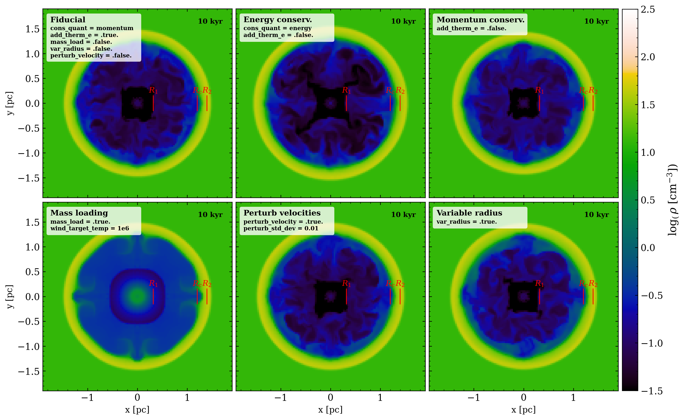
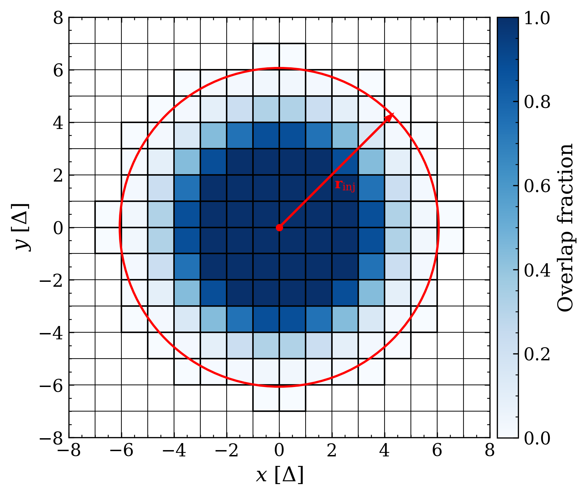
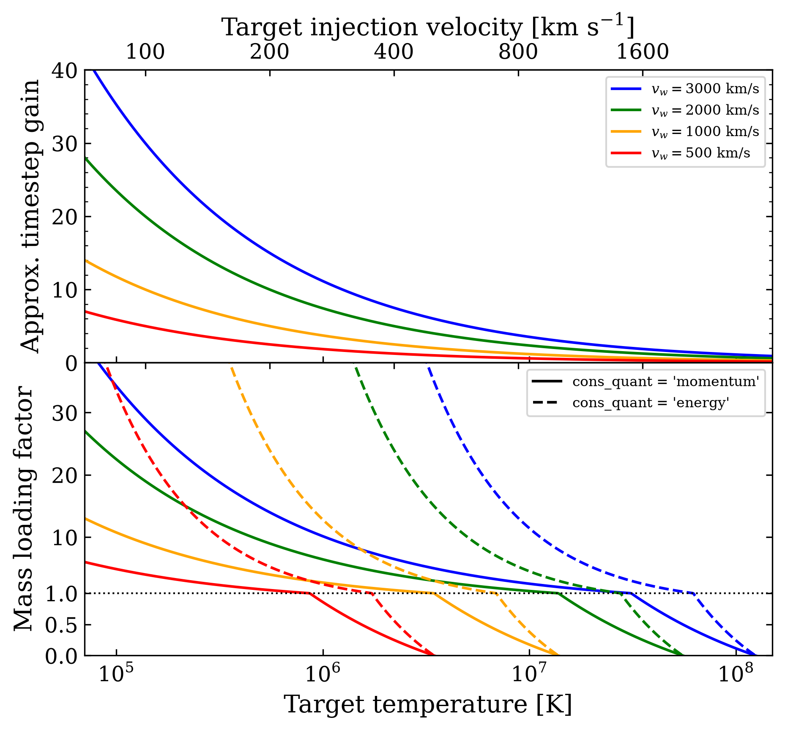
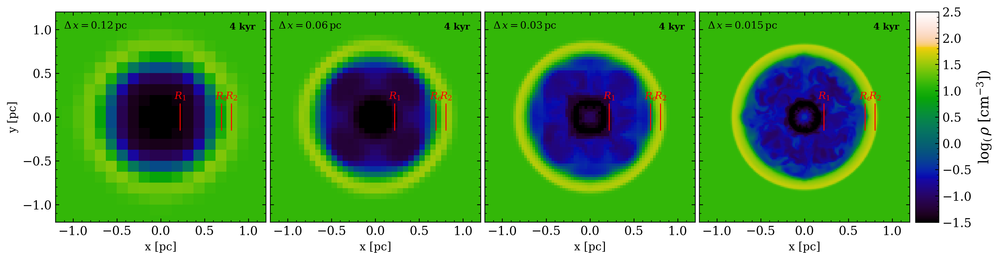

Stellar Feedback
Stellar winds
As described in detail in Wall et al. (2020), Torch incorporates stellar winds by updating the mass, velocity and internal energy in an injection region around each star driving a wind. The update is performed based on the mechanical luminosity of the star
where the mass loss rate \(\dot{M}\) and wind velocity \(v_w\) are computed and set
in FLASH using the AMUSE interface. The choice of wind physical parameters
(i.e. mass loss rate and velocity) is controlled
by a parameter in torch_user.py using one of the following arguments:
massloss_method = 'seba' or 'leit' or 'puls'
The methods are compared below. We recommend setting
massloss_method = 'seba'
For every method, the mass loss rates are calculated either from a mass loss recipe
implemented directly in torch_se.py (for the 'leit' and 'puls' options) or
by the SeBa stellar evolution code (from a mass loss prescription in the code).
The velocities are set directly in torch_se.py for every method.
The 'leit' option calculates mass loss rates and velocities based on
Leitherer et. al. 1992. The 'puls' option calculates them from
Kudritzki & Puls 2000 and Vink et al. 2000. For the 'seba' option,
the velocities are set in torch_se.py using Leitherer et. al. 1992, and
the mass loss rates are set by the SeBa stellar evolution code, which is based
on Vink et al. 2000 with a pre-factor of 1/3 to match modern mass loss
rates estimates. An option to use the mass loss rates from SeBa with the velocities
from Kudritzki & Puls is currently available in the develop branch as 'seba_puls'.
Different options for the wind injection are shown in Figure Fig. 1 and described in further detail in this section.
{kind=link}

Fig. 1 Wind driven bubbles for different paramter choices. Parameters that deviate from the Fiducial case are labeled in each panel. Red lines indicate the radius of the termination shock (\(R_1\)), the contact discontinuity (\(R_C\)), and the forward shock (\(R_2\)) of the bubble.
Injection region
The injection region is defined by an injection radius \(r_{\rm inj}\) set in
flash.par using
ref_radius = -1.0
If a negative value is supplied, Torch uses the default
where \(\Delta\) is the local cell width. The factor of \(\sqrt{3}\) ensures that the kernel extends to the corners of a cube spanning \(7\times7\times7\) cells, corresponding to an effective kernel radius of 3.5 cells along each Cartesian direction. Note that the injection radius must be at least \(\sqrt{3}\Delta\), i.e. spanning the corner of an oct.
Rather than treating cells as either fully inside or outside the injection region, Torch computes the fractional overlap between each cell and the spherical injection kernel. The fractional overlap is calculated using the algorithm from ZEUS-MP (Hayes et al., 2006), modified with a tapered center-weighting. The injection region is illustrated in Fig. 2.
In addition to weighting the injection by the overlap kernel, the injection is modified as a function of radial distance using the solid angle of a square with side length equal to a cell size following Mathar (2022)
In this way, the injection is weighted by a radial factor that depends on how much of the wind a cell “sees”. Note that this option is turned off when using mass loading.
{kind=link}

Fig. 2 Fractional overlap of the default wind injection kernel with the computational grid.
Injection strategy
The wind material distributed over the injection region can be added using one of
two update schemes, selected through the cons_quant parameter:
cons_quant = "momentum" or "energy"
Momentum-conserving injection
The default method conserves mass and vector momentum. In each cell, the injected mass is added to the existing gas, and the new velocity is obtained by conserving the total momentum of the cell,
Because the injected material mixes with gas that may already have a different velocity, this likely results in a loss of kinetic energy during the update. The resulting kinetic energy is generally smaller than the injected mechanical energy, and is typically assumed to have been converted into unresolved small- scale motion.
By using the parameter
add_therm_e = .true.
the missing kinetic energy is added back as thermal energy so that the total injected mechanical energy is conserved. This provides a momentum-conserving update that also conserves the injected mechanical luminosity. Note that if the required thermal correction would be negative, no thermal energy is added to that cell. Furthermore, without adding this missing energy, the internal energy of the cell is gradually dissipated. In rare cases, this cause cells to reach zero internal energy, thereby triggering a crash.
Energy-conserving injection
When
cons_quant = "energy"
the velocity update is instead constructed to preserve the injected kinetic energy rather than the vector momentum. In this scheme, the specific kinetic energy of the mixture is conserved, but the resulting velocity does not, in general, satisfy momentum conservation. This option exists primarily for comparison with earlier implementations and idealized tests, while the momentum-conserving method is recommended for most applications.
Mass loading
Torch simulations can be dramatically sped-up by applying mass loading to the injected wind material. Therefore cluster-scale production runs often employ mass loading. Mass loading can be turned on by setting
mass_load = .true.
When enabled, the injected wind mass is adjusted so that the wind reaches a user-specified target temperature,
wind_target_temp = 1e6
The target temperature is converted to a reference wind velocity assuming a fully ionized gas,
following Equation 36.28 of Draine (2011). The injected wind velocity is then
set to \(v_{\rm ref}\), while the injected mass is adjusted to conserve either
the injected momentum or kinetic energy, depending on the selected injection
scheme (cons_quant).
For momentum-conserving injection, the mass loading factor is
while for energy-conserving injection it becomes
The injected mass is then scaled according to
Figure Fig. 3 illustrates the approximate speed up and mass added as a function of the target temperature for a few wind velocities. Note that most feedback stars have wind velocities between 1000-3000 km/s.
{kind=link}

Fig. 3 Approximate gain and mass loading factor as a function of target temperatures for a few different wind velocities.
Note
Although this option is referred to as mass loading, the implementation also permits mass unloading. If the reference velocity exceeds the input wind velocity (\(v_{\rm ref} > v_{w}\)), the loading factor becomes negative, reducing the injected mass instead of increasing it. This can occur for slow winds or when a sufficiently high target temperature is chosen. Users should therefore ensure that the selected target temperature is physically consistent with the expected wind velocity.
Variable radius
As an option, Torch supports a method for a variable injection radius, activated using
var_radius = .true.
If used, the injection radius is updated at each timestep to match the radius of the wind termination shock, estimated using the self-similar solution from Weaver et al. (1977)
where \(\alpha=0.88\), \(\rho_0\) is the mean gas density at the location of the star when the wind turns on, and \(t_w\) is the time since the wind turned on. When using variable radius, another parameter can be used to limit the minimum radius of the injection region
min_radius = 0.0
Velocity pertubations
Torch can optionally add small cell-by-cell perturbations to the wind velocity before the wind material is injected. This is controlled by
perturb_velocity = .true.
perturb_std_dev = 0.05
When enabled, the magnitude of the wind velocity in each injection cell is
perturbed by a factor sampled from a normal distribution with width
perturb_std_dev. Note that the perturbation factors are clipped at five
standard deviations and forced to remain positive, preventing the wind
velocity from changing sign. After the perturbations are applied, the velocities
are renormalized so that the total injected kinetic energy remains equal to the
unperturbed wind kinetic energy.
This option was introduced to break the perfect spherical symmetry of the injection pattern. Such symmetry can otherwise seed grid-aligned numerical artifacts, especially in idealized test problems or highly symmetric setups.
Warning
Despite normalizing the perturbed velocities to conserve the total injected kinetic energy, this normalization is global over the injection region. Individual cells can still receive more kinetic energy than in the unperturbed case.
When using momentum-conserving injection with
add_therm_e = .true.
the thermal-energy correction is computed cell by cell. Even small velocity perturbations can therefore produce cells where the required thermal compensation is negative. In such cases Torch sets the thermal correction to zero in that cell, so the local energy compensation is no longer exact.
Resolution test
Figure Fig. 4 demonstrates the wind injection mechanism at four different resolutions, corresponding to minimum cell sizes ranging from 0.12 pc to 0.015 pc.
{kind=link}

Fig. 4 Wind bubble test at four different resolutions for the fiducial parameter set.